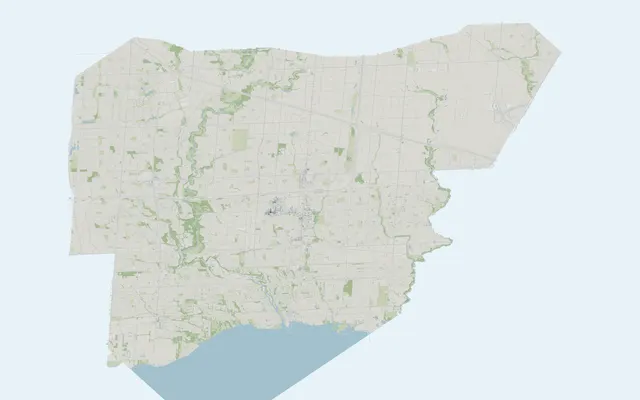

Sources and credits
The maps, plans and people behind the city model.
Images and atlas


Citywide view
Citywide model · with proposals
City of Mississauga · Ontario data© OpenStreetMapArchitectural massing © Zeidler Architecture Inc.; supplied by Infrastructure Ontario. Independent city placement and visualisation by Future Mississauga.275 Superior Boulevard photo reference: David Lasker/Cityscape Photography · davidlaskerphotography.com

Portrait images
Port Credit · 4:5 scene
Browse all portrait views →City of Mississauga · Ontario data© OpenStreetMap
Downtown aerial · 20 November 2026 · Original 6K PNG ↓ · Print PDF ↓

Map data
The main sources used to build the city and its surroundings.
City of Mississauga
Buildings, roads, water, parks and trees.
Government of Ontario
Terrain and the water boundary off Lakeview.
Contains information licensed under the Open Government Licence – Ontario.
OpenStreetMap
Transit tracks, beaches and airport context. Display widths and some profiles are approximate.
© OpenStreetMap · ODbL 1.0
Contributors
Drawings, photographs and local knowledge help improve individual buildings.
Clarkson GO community
Architectural massing © Zeidler Architecture Inc.; supplied by Infrastructure Ontario. Independent city placement and visualisation by Future Mississauga.
Building photography
David Lasker/Cityscape Photography: 275 Superior Boulevard. Tom Arban Photography Inc. and Mark Walsh / Prelco: NRC. Riley Snelling: UTM Meeting Place. Industryous Photography: Bell Gairdner / Harding Waterfront Estate.
Local landmarks
Earthscape Play contributed design and reference help for Fairwinds Park, Paul Coffey Park and Churchill Meadows. West End Buddhist Temple reference help: Bhante Saranapala. Gala Gateway artwork: Harley Valentine and Gabriel Fain.
Contributed drawings, photographs and private correspondence remain private. Credits do not grant permission to reuse the original work.
Credit files
Project research
Dates, planning references and the limits of each study.
Sharing and reuse
Sharing a picture
Credit Future Mississauga by Daniel Sultan and link to futuremississauga.com. Keep the image’s source attribution visible and distinguish proposals from existing buildings.
Understanding a model
Models combine dated sources and varying levels of detail. Proposals can change; construction views do not establish completion. Trees and lighting are illustrative, and the models are not surveyed property or engineering measurements.
Corrections
Have a drawing or something to correct?
daniel@futuremississauga.comAn independent project. The City, Ontario, Metrolinx and contributors do not endorse the models.
Building study notes
Notes on the building comparisons →
- 1422 Aldo Drive
- Burnhamthorpe Community Centre
- 6719 Glen Erin Drive
- Hazelhurst Business Park
- South Banks / Lakeview Village
- 41 Bay Street
- 42 John Street South
- 42 Peter Street South
- South Common Community Centre and Library
- Block 22 - dated optional design study
- St Hilary’s Anglican Church · roof study